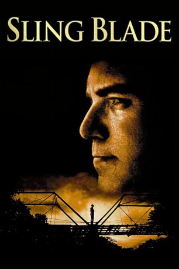

#2976 Sling Blade - Auf Messers Schneide
Alternativ: Sling Blade
Auszeichnungen: 1 Oscars gewonnen für 1 Oscars nominiert
 
 IMDB-Wertung: 8.0 / 10
IMDB-Wertung: 8.0 / 10  Metascore: 84
Metascore: 84 
US-Drama von mit Billy Bob Thorneton, der für sein Drehbuch zu diesem Film den Oscar erhielt. Karl Childers kommt nach 25 Jahren aus dem Gefängnis frei. Der einstige Mörder ist ein geläuterter Mann, der nach Gottes Gesetzen leben und nicht mehr töten will. Doch wie lange können die guten Vorsätze halten, wenn ein gewaltbereiter Redneck seine Familie bedroht?
Jahr: 1996
Dauer: 134 Minuten
FSK:
Land: USA Studio: MiramaxTonspuren:
Untertitel: Deutsch,
Auflösung: 1080p (1920x1040) Größe: 11980 MB
Genre: Drama
Regisseur: Billy Bob Thornton
Drehbuch: Billy Bob Thornton, Billy Bob Thornton
Soundtrack: Daniel Lanois
Darsteller:
 Billy Bob Thornton als Karl Childers
Billy Bob Thornton als Karl Childers Dwight Yoakam als Doyle Hargraves
Dwight Yoakam als Doyle Hargraves J.T. Walsh als Charles Bushman
J.T. Walsh als Charles Bushman John Ritter als Vaughan Cunningham
John Ritter als Vaughan Cunningham Lucas Black als Frank Wheatley
Lucas Black als Frank Wheatley James Hampton als Jerry Woolridge
James Hampton als Jerry Woolridge Robert Duvall als Karl's Father
Robert Duvall als Karl's Father- Rick Dial als Bill Cox
 Brent Briscoe als Scooter Hodges
Brent Briscoe als Scooter Hodges- Christine Renee Ward als Melinda
- Bruce Hampton als Morris
 Mickey Jones als Monty Johnson
Mickey Jones als Monty Johnson- Jim Jarmusch als Frostee Cream Boy
- Natalie Canerday als Linda Wheatley
- Sarah Boss als Marsha Dwiggins
- Kathy Sue Brown als Theresa Evans
- Wendell Rafferty als Melvin
- Vic Chesnutt als Terence
- Ian Moore als Randy Horsefeathers
- Judy Pryor Trice als Mrs. Woolridge
- Scott Stewart als Bubba Woolridge
- Betty Lynn Hall als Woolridge Daughter
- Gary Don Fletcher als Preacher
- Tim Holder als Albert
- Tom Kagy als Freddy
- Stacy Barrow als Woodridge Secretary
 Jackie Stewart als Walter
Jackie Stewart als Walter- Jamie Stewart als Teenage Boy
- D.J. Royston als Housekeeper
- Lacy Bailey als Karen
- Raymond Lewallen als Ticket Agent
- Bill Glasscock als Old Man
Datei: X:\1996\Sling Blade - Auf Messers Schneide (1996, FSK, 1920x1040).mkv seit 12.01.2016
Festplatte: HD 1996-2002
 Es gibt insgesamt 78 Filme in der Gruppe '1996'
Es gibt insgesamt 78 Filme in der Gruppe '1996'